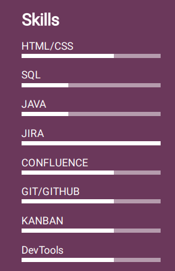

Cześć! Nazywam się Dominik Jakubaszek
Zapraszam do obejrzenia mojej strony w technologiach


Z wykształcenia jestem absolwentem Wydziału Zarządzenia na kierunku zarządzanie i analityka biznesowa IT.
Początkowo zafascynowany naukami o zarządzaniu chciałem zostać menedżerem i zarządzać kilkuosobowym zespołem, ale w głębi serca odczuwałem chęć pracy w technologiach. Z tego powodu też zdecydowałem się na Analitykę Biznesową. Z biegiem czasu jednakże, po ukończeniu studiów licencjackich zatrudniłem się na stanowisko Testera oprogramowania.
Tam zdobywałem pierwsze doświadczenie w świecie IT związane z zawodem testera oprogramowania, ale i budową stron oraz składni języków programowania. W tak zwanym międzyczasie narodziła się moją mała pasja jaką jest język niemiecki, która trwa do dziś.
Zdobycie tytułu certyfikowanego testera według ISTQB pozwoliło mi na nabycie teoretycznej wiedzy i ugruntowanie nauczonych praktyk.
Obecnie pracuję w Irlandzkim zespole BAU( Business as Usual) jako Junior Test Automation Engineer wspierając prace utrzymaniowe bieżącego kodu w testach regresji oraz rozwój w razie potrzeby.


.gif)

Moje umiejętności i stopień zaawansowania
Choć fanem jestem tradycyjnych czterek kółek, nie jest mi obca również jazda na dwóch. Ten mały potworek to Benzer 80cm3 o maksymalnej prędkości 70km/h
Ja i jednoślad
Podróżuje głównie raz do roku do ciepłych krajów. Do tej pory zwiedziłem Grecje, Wyspy Kanaryjskie, Egipt i Turcję
Podrózuje
Zazwyczaj biegam krótkie dystanse od 5 do 10 km. Na swoim koncie posiadam ukończony jeden półmaraton oraz kilka festiwalu biegowych" Biegnij Warszawo", "Bieg niepodległości", 'Praska 5
Biegam
Częścią mojego życia są również ćwiczenia. Posiadam dyplom trenera personalnego oraz instruktora siłowni. W wolnym czasie trenuje siłowo oraz dynamicznie.
Ćwiczę
Dominik Jakubaszek©